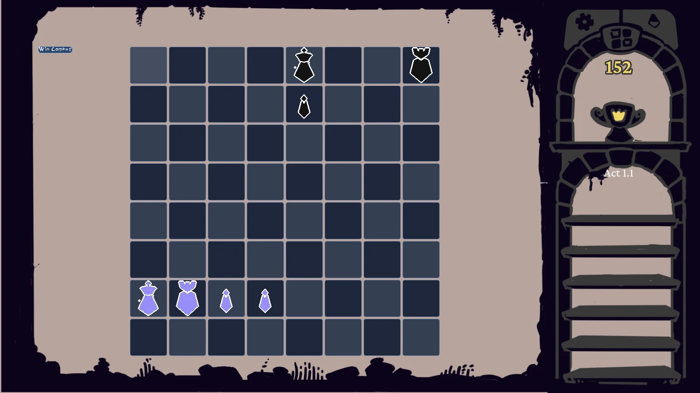
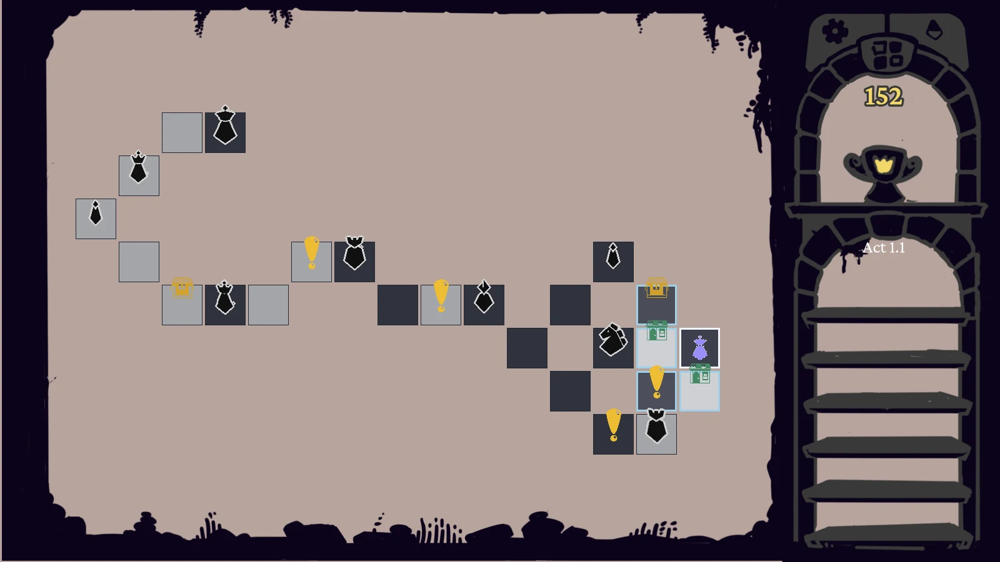
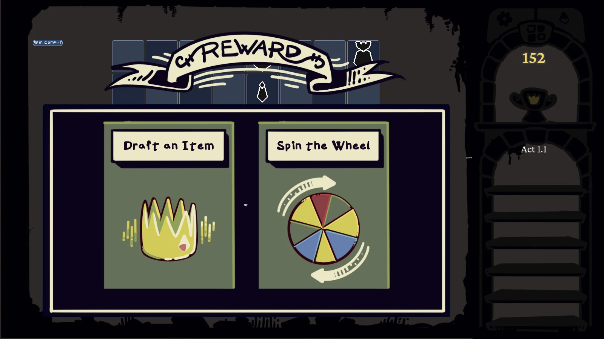
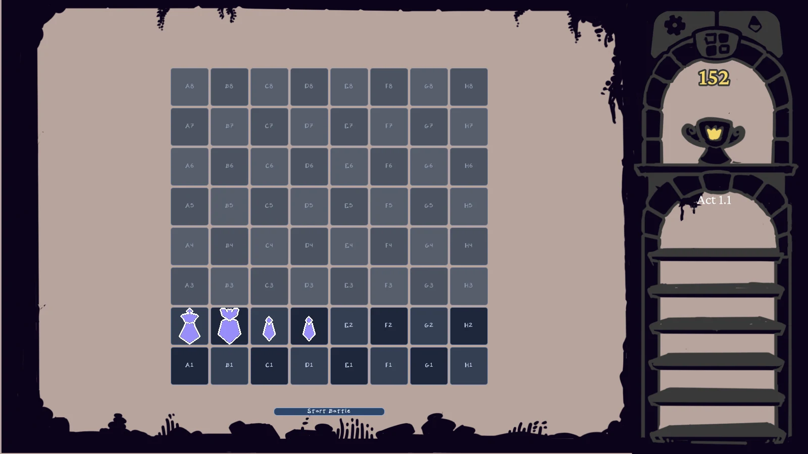

For business, contractor, collaborator, or general studio inquiries:
Independent game studio
Tab Six Studios
Tab Six Studios is an independent game studio developing Piecebreaker, a chess-inspired roguelike currently in development.
A focused studio presence for artists, contractors, collaborators, and professional contacts.
- Piecebreaker in development
- Chess-inspired roguelike
- Business and collaboration inquiries welcome



Studio
Focused on one game, presented with intent.
Tab Six Studios is currently centered on Piecebreaker. The goal for this site is simple: provide a clean, credible public presence while the first release is being built.
Rather than overstate the studio, the site stays narrow and up-to-date: who we are, what we are making, what the game looks like today, and how to get in touch.
Piecebreaker
A chess-inspired roguelike in active development.
Piecebreaker combines board-based tactics with run structure, encounter routing, deployment decisions, and post-combat rewards. The current build already shows a distinct visual language and a clear throughline between chess fundamentals and roguelike pacing.
- Board-based combat built around chess movement and positional pressure.
- Runs that move between route planning, encounters, shops, and rewards.
- Deployment before combat, with setup decisions that shape each battle.
- Piece items and relic rewards that change how a roster develops over a run.
Gallery
Current development screens.

Contact
Professional contact for the studio and the game.
Public game page
Piecebreaker also has a live Steam listing for wishlists and public-facing discovery.
Screens and copy on this page reflect the current development build and may evolve as Piecebreaker continues development.